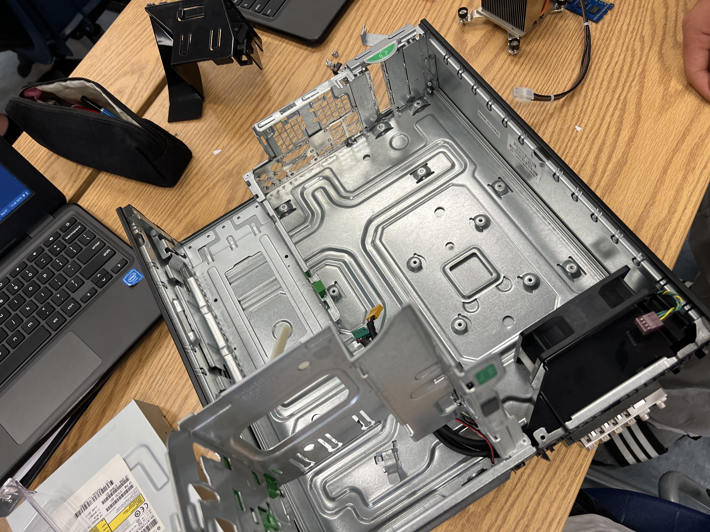
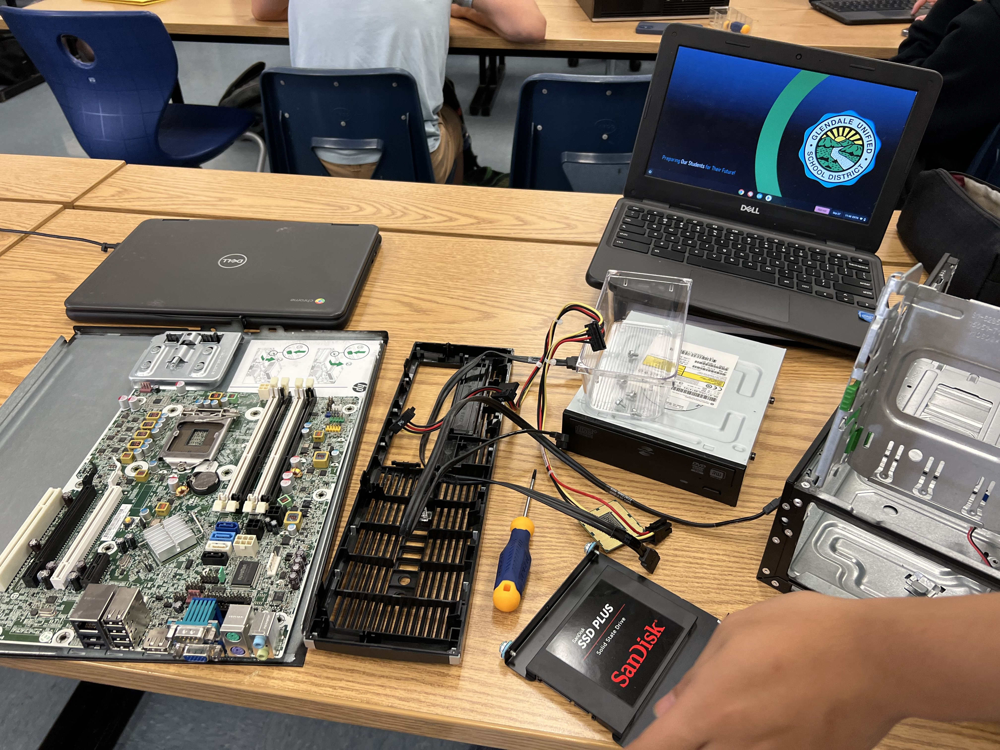
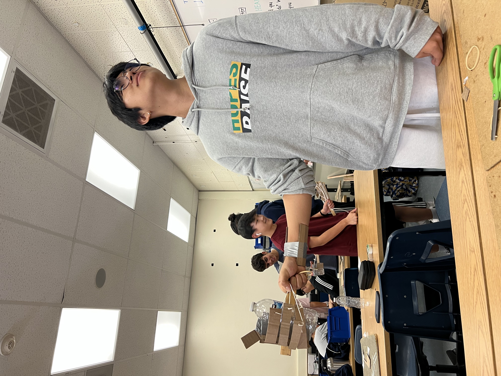
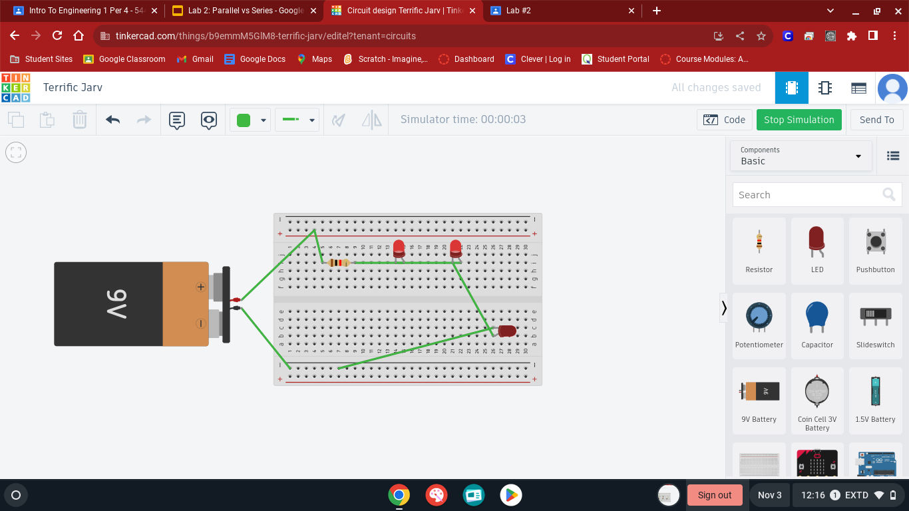
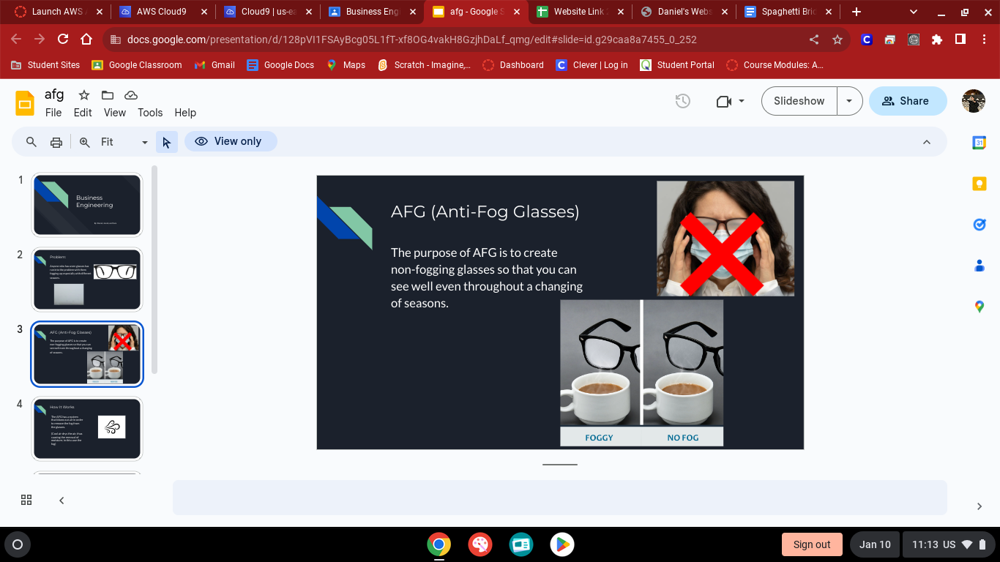

8/25/23 (#1)- Today, we attempted to show the importance of continuing to try again after failure through a group exercise. We connected pipes together as a team and tried leading it into a bucket. Obviously, it took more than one try as we had to find out how we would get it done in the most efficient, easiest way, but in the end, we successfully completed the task after realizing that we needed to fix a couple of problems involving the speed of the marble, and the slope of the pipes.
9/11/23 (#2) - So far, we've just started on working on our Rube Goldberg Project. We came up with a base idea for the project, although the build seems a lot harder than we had expected. Since our last journal entry, we have learned how to CAD, which was what we used to plan out our project.
9/25/23 (#3) - Finally, we were able to finish our Rube Goldberg project after a week. It took a lot of trial and error in order to realize that our draft wouldn't be accurate enough to actually carry out the project. While we were doing it, we realized we would need to either improvise on some parts or just completely take it out. Another problem was the size, since our draft wasn't too realistic to scale. So, we used a lot more tape than expected to actually hold it up, because it wasn't as stable as we wanted it to be. Eventually, we fixed all our problems after understanding how to work out our lever. It was an incredibly fun project to do, and we learned a lot about a small portion of the engineering world.
9/29/23 (#4) - Today, we took the time to understand what were the specific parts of the computer. We had decomposed the structure of the computer, and took the time to reassemble it again. Doing this helped us learn what was inside the PC, and how it works. Recently, we have been learning more about computer engineering, which is why we had this type of activity.
 
10/4/23 (#5) - We decided to take on another challenge of creating a prosthetic hand. The materials we had were cardboard, tape, string, and rubber bands. First off, we thought of the base of the actual project. We deicded that the rubber bands would be used to pull the fingers that were created off the limited cardboard we had. So, we created a minimilastic, simple design that still incorporated all the materials given to us. We faced the challenge of not being able to actually use the hand without using the other hand, since our prosthetic would just follow the hand that would pull on the bands. So, we decided to create something that latched on to our wrist and stayed there so that it would actually be able to carry something with only one hand. It took some time, but eventually we created a very simple, useful design.
>
10/20/23 (#6) - Today, we finally launched our rocket that we made from a soda bottle. We had expected it to be a complete fail, but to our surprise, it had an airtime a lot longer than we had expected. If anything, it did a lot better than most of the other rockets. We went with a basic design of simple adding some wings on the side of the bottle, and finishing it with a cone at the top to make it look somewhat like an actual rocket. We also kept in mind to not make it too heavy, which led to the conclusion of making our cone out of paper. Since our expectations were so low, we were pretty surprised seeing it go so far. This is the video of the rocket.
10/26/23 (#7) - We have now moved on to Environmental Engineering. In order to learn more about it, we did a project as we do for each section. This time, our goal was to learn to filter water with the provided materials: rocks, sand, cotton, two parts of a bottle, and dirty water. Of course; we had clean water to actually clear up the previous dirt on the bottles. Our plan was to first stack the start of our filtering system with cotton. Then, we stacked a bit of sand, and finally ended it off with the rocks. After out first try, we realized that it took quite a long time and it wasn't filtering as well as we thought it would. So, we decided to restart all over again and try to use less materials so that the water could go through. Unfortunately, we squished the cotton too into the bottle that it was essentially clogged, and not filtering as we wanted it to. So, we had to wait quite a while, drip after drip, to see how the filter would turn out this time, just for it to end the same as it did previously. Obviously we were pretty disappointed, given that class ended with us not feeling satisfied with our result, but we did understand some of the mistakes we were doing.
11/3/23 (#8) - This week's focus is on Electrical Enginerring. Up to this point, I've had no knowledge on the important factors to get an electrical system running. Now I have gained knowledge on these things, like how a resistor works and the units of certain things. We used tinkercad again to visualize a breadboard and use the functions of resistors and LED's on it. It was quite fun to play around with, as it was a new challenge to get the LED's to light up. I learned what parts go into the negative side and what goes into the positive, and ultimately found the way to complete the labs given. It seemed very complex at first, but I realized that it was rather easy, and finished it with a complete understanding of what I was doing. Although I had to redo it since the LEDs weren't lit up, I found my mistakes easily and redid the assignment.
>
12/1/23 (#9) - We just finished up business engineering. This was a short yet fun section, as we had a similar activity to the show Shark Tank. We made a presentation on the item we came up with, which was the Anti-Fog glasses for us. Essentially, we would pump out air to defog the glasses whenever there was something on the glasses, like when you eat. Although not everyone in the world wears glasses, we thought this could be useful for those that struggled with this problem, since one of the members in our group actually found this bothersome. I believe it was a pretty good idea, and it was fun presenting it to the class.
>
1/12/2024 (#11) - Today, we focused on chemical engineering, one of our final units to learn. We made something that I've never seen before, called oobleck. It is a glue-like object where if you touch it, it feels like a solid. If you don't put pressure on it and let it fall out of your hands, it becomes a solid. We mixed in water into cornstarch that was given inside a tray. We didn't just dump in the water, but instead we kept putting the water in slowly, so that we could attempt to make the perfect oobleck. It turned out very well, and we enjoyed playing around with it.
2/14/2024 (#12) - We finished our first iteration of the rat trap car today, and we test ran it last class. We ended up failing, but we learned a lot in the process of doing so. First off, we planned it out through influence from a Mark Rober video, but halfway we realized that using the string contraption would be hard for us as connecting the back wheels to the trap was a challenge. All the materials were given to us, so we really just needed to figure out the best possible design to create the most distance. It seemed very easy when we were created our CAD and sketching it out, and even the start of assembling it was fairly simple. We started off by creating the base of the car, to support and connect everything in the vehicle. After we had created this through cardboard, we moved on to figuring out the wheels. As we were creating the wheels, we needed to find a way to get the CDs actually rolling while being stable enough. This also played a large factor to our failures, as it was not stable leading to the wheels not functioning correctly during our testing. Although this was a big problem, the greatest problem was actually connecting the other half of the wheels to the rat trap, as triggering the trap actually didn't get our wheels to go, since no force was created due to the strings not fully unraveling. Because of this, our whole vehicle actually broke down and we had to break it down to realize our problems. Now that we understand our main issues, we look forward to improving these issues and creating an actually functioning car through the calculations that we came up with, which was 29x12, being the length of the arm times the ratio of wheel to axle. We may try to increase this number, as the higher it is, the longer the distance, but our main priority in the end is actually getting the vehicle to work.
2/26/2024 (#13) - We tested our final iteration of the rat trap. It was a major success. We solved our previous problems of the strings and the wheel, and we also decided to use smaller, more stable materials so that our car wouldn't fall apart as it did last time. Instead of using string, we decided to use the fishing wires, which ended up in our favor. It was a much better, easier process to attach and tangle it compared to the string, so efficiency was another added bonus. When testing it in the cafeteria, we actually ended up getting the longest distance out of every other cars. We knew that we would most likely win, as our test runs led to the idea that we could average around 64ft when working. The calculations were made beforehand and our results matched up with it. OVerall, this was a great learning process as we ended up turning over a completely failure of a car into another idea that was inspired by the original, but a much better version.
3/4/2024 (#14) - The current project we are working on is the egg drop challenge, where we attempt to land an egg safely from being thrown off a 3 story building. Our idea is inspired by a lot of similar designs on the internet, where they trap the egg so that it doesn't move using multiple sticks to block it in with a triangle-like shape. After doing this, we plan to create a parachute using a bag or balloon at the top, connected to strings so that it slows down the dropping process, keeping the egg safe. We only have one iteration, so we have to make sure this is as perfect as it gets in the amount of time that we have, which is not much. This is a rather simple challenge compared to the other ones, as it seems more straightfoward than the rest, where you can visualize how the design would look like right off the bat. We plan on having the same success we had with our rat trap car.
3/14/2024 (#15) - We finished testing our finalized egg drop project. We had a major success by ditching our originial idea of straws to trap the egg, and instead making a box with cotton inside of it to make it more heavier and safer. By making this box, it allowed the parachute (trash bag) to be a lot more useful, as the box was heavy enough to allow the parachute to catch the air. This project was a lot more simple compared to other ones, so we were able to make our box without any problems. Before we actually did our run, we did a couple test runs to make us realize that the bag needed to be a little open to maximize the parachute's use. Once we kept it open, the parachute worked better and was a big part of our success in the actual run. We closed the box shut and tied strings to connect it to the parachute. This is the video of the actual run, where we were very successful, with the egg having no cracks or damages at all. The cotton especially kept it safe, so everything that we put into the project was put to use for the success of the entire run.